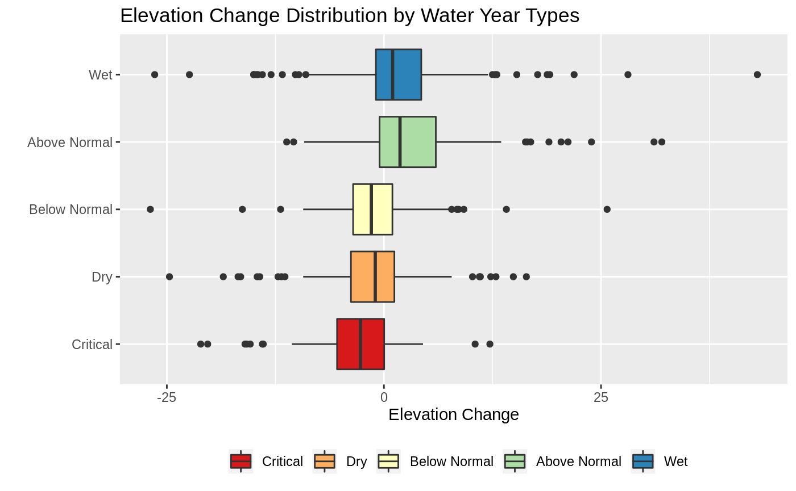
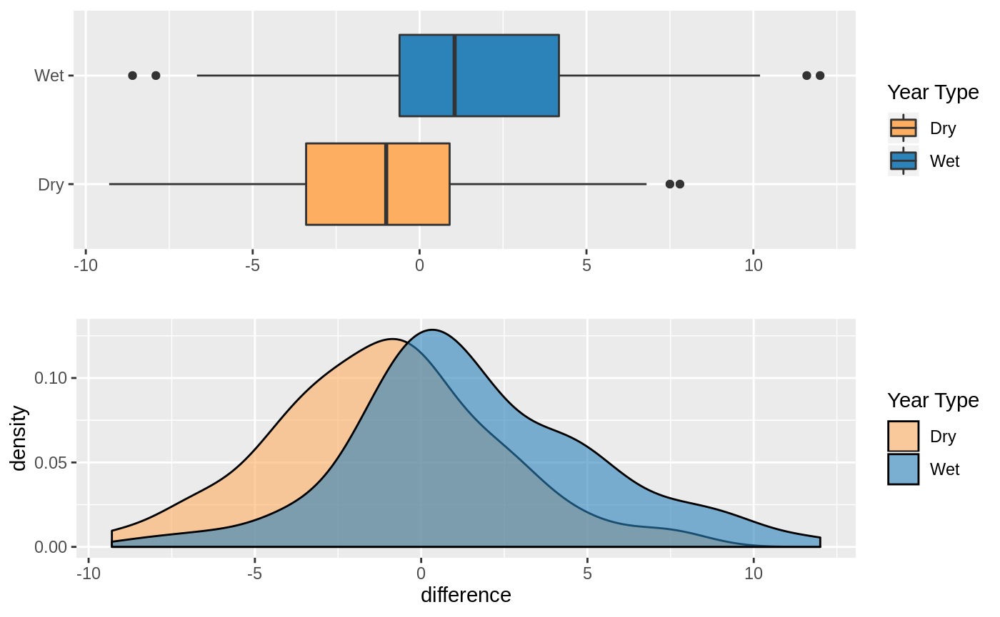
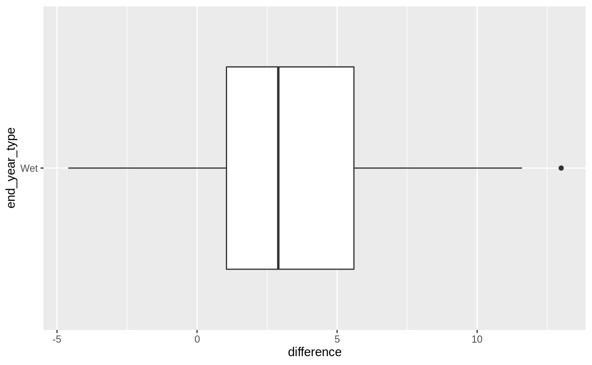
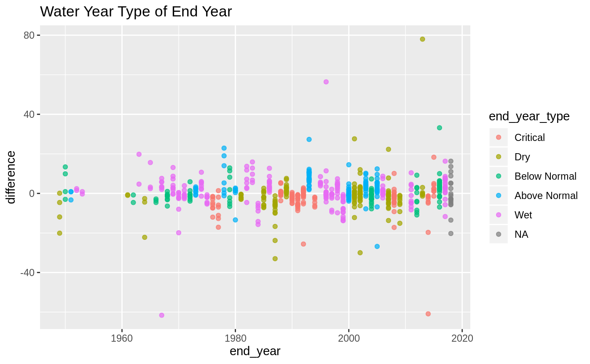
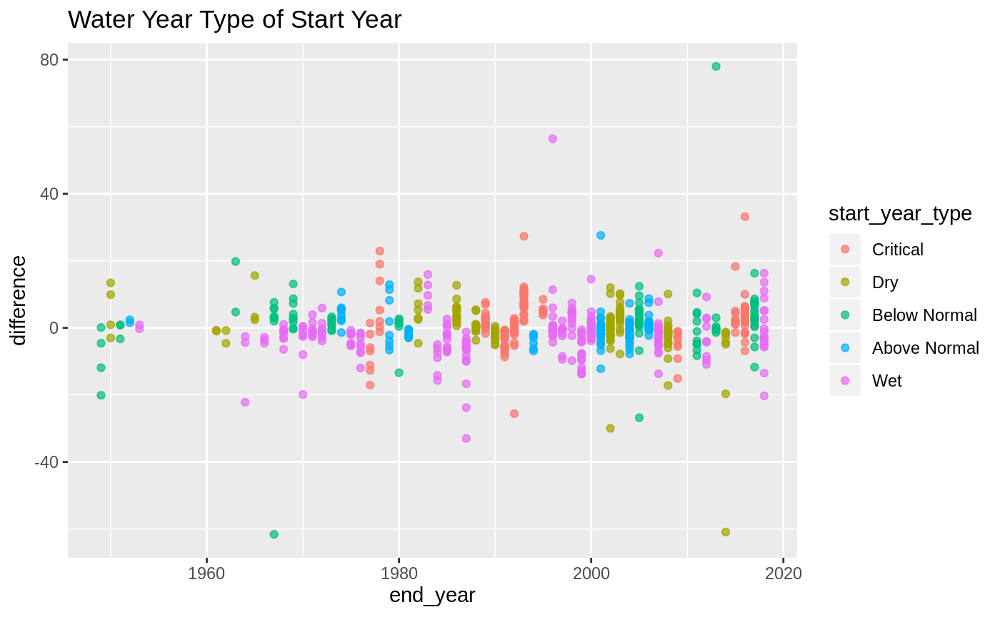
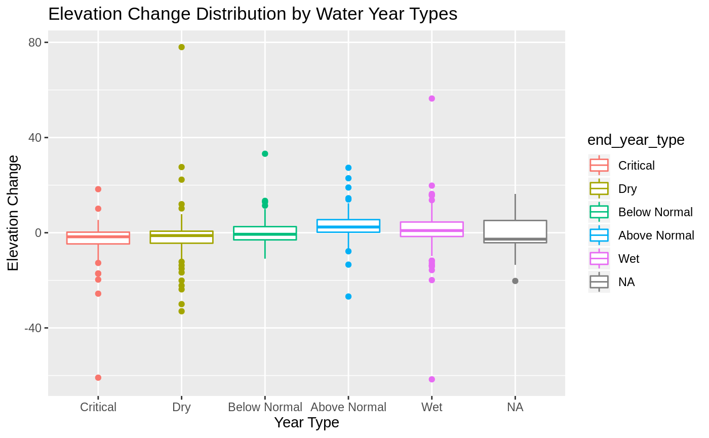
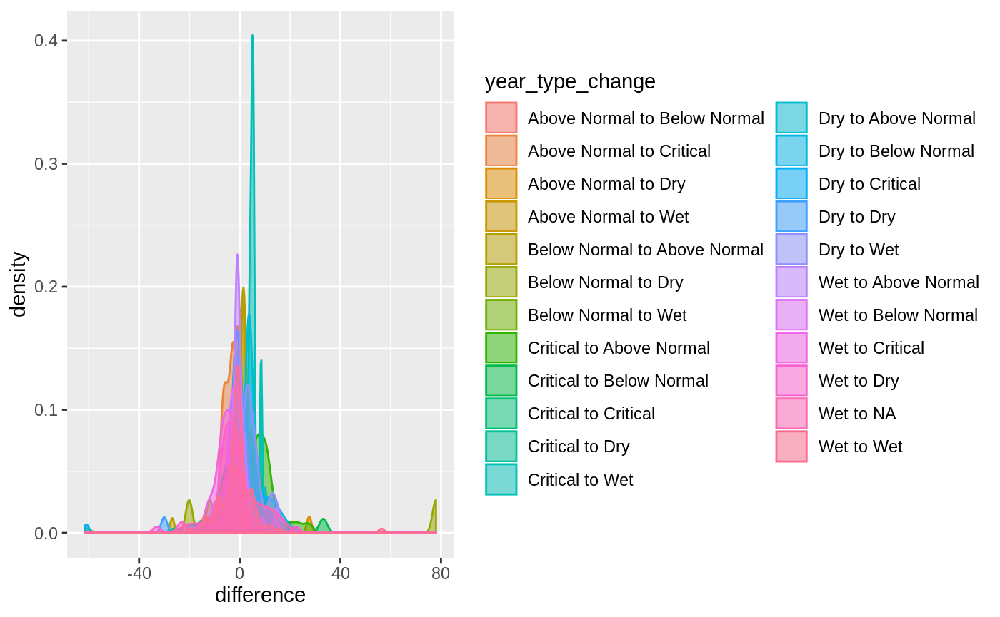
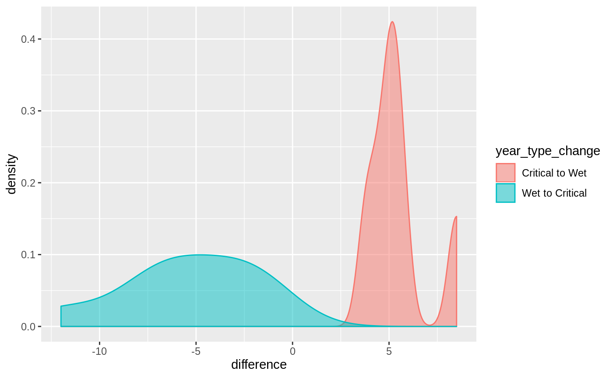
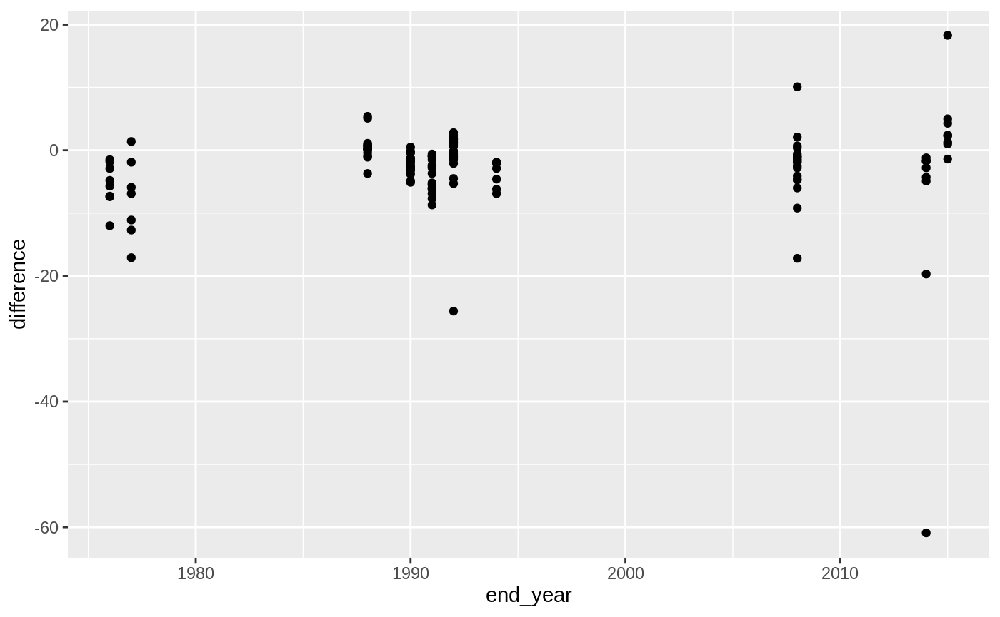

Groundwater Trends
groundwater-trends.RmdIntroduction
In this article I explore groundwater elevation trends, we are mostly interested in elevation difference across 10 years, 5 years and recent year. We also only look at groundwater wells where data was reported recently (2018). The comparison will focus on the elevation for Fall values (August-November).
Groundwater Well Selection
We will focus on wells where a groundwater elevation was reported for 2018. This results in 23 candiate wells for analysis. This number will be smaller as we seek to make comparison across years.
stations_with_recent_data <- groundwater_stations %>%
filter(year(end_date) >= 2018)
elevation_data <- groundwater_levels %>%
filter(site_code %in% stations_with_recent_data$site_code) %>%
select(site_code, date = measurement_date, wse)
groundwater_stations %>%
filter(year(end_date) >= 2018) %>%
leaflet() %>%
addTiles() %>%
addCircleMarkers() Elevation Differences
10 years
For the ten year difference I look at the 2018 elevation minus the 2008 elevation. Not all wells are represented in this difference, of the 23 only 21 have values for both 2008 and 2018.
ten_year_difference <- elevation_data %>%
filter(month(date) %in% 8:11, year(date) %in% c(2018, 2008)) %>%
mutate(year = year(date)) %>%
select(-date) %>%
spread(year, wse) %>%
mutate(difference = `2018` - `2008`) %>%
filter(!is.na(difference))
ten_year_difference %>%
ggplot(aes(difference)) + geom_histogram(binwidth = 4, color="#949494") +
labs(title = "Elevation Change 2008 to 2018",
x = "Elevation Difference (feet)")ten_year_difference_with_lat_long <-
ten_year_difference %>%
left_join(stations_with_recent_data, by=c("site_code"="site_code"))
difference_2008_2018_pal <- colorNumeric("Spectral",
ten_year_difference_with_lat_long$difference)
ten_year_difference_with_lat_long %>%
leaflet() %>%
addTiles() %>%
addCircleMarkers(fillColor = ~difference_2008_2018_pal(difference),
color="#666666", weight = 2, fillOpacity = 1,
popup = ~paste0("Elevation Change: ", round(difference, 1))) %>%
addLegend(values = ~difference, pal=difference_2008_2018_pal)As is shown in the histogram most of values are close to zero, with two pontential outliers on both sides. To determine if these are in fact outliers we will need to explore differences across multiple decades. In the section below I do exactly this, iterate through all decades in the data compute differences at these wells.
decade_differences <- purrr::map_df(1980:2018, function(y) {
year1 <- y - 10
year2 <- y
elevation_data %>%
filter(month(date) %in% 8:11, year(date) %in% c(year1, year2)) %>%
mutate(year = ifelse(year(date) == year1, "start_year", "end_year")) %>%
select(-date) %>%
group_by_at(vars(-wse)) %>% # group by everything other than the value column.
mutate(row_id=1:n()) %>% ungroup() %>%
spread(year, wse) %>%
mutate(difference = end_year - start_year,
diff_id = paste0(year1, "_", year2),
end_year = year2) %>%
filter(!is.na(difference))
}) %>% left_join(stations_with_recent_data, by=c("site_code"="site_code"))decade_differences %>%
ggplot(aes(difference)) + geom_histogram() +
labs(x = "Decade Differences (feet)",
title = "Decade Elevation Changes (1980-2018)") 
The above is showing all decade differences for all wells that have recent data. The shape is very similar to what we saw in the 2008 to 2018 change, the outliers however are just tail ends to this larger distribution.
decade_differences_avg <-
decade_differences %>%
group_by(site_code) %>%
summarise(
avg_diff = mean(difference, na.rm = TRUE),
lat = first(lat),
lng = first(lng)
)
decade_differences_pal <- colorNumeric("Spectral",
domain = decade_differences_avg$avg_diff)
decade_differences_avg %>%
leaflet() %>%
addTiles() %>%
addCircleMarkers(fillColor = ~decade_differences_pal(avg_diff),
fillOpacity = 1,
color = "#666666", weight = 2,
popup = ~paste0("Avg Difference: ", round(avg_diff))) %>%
addLegend(pal = decade_differences_pal, values = ~avg_diff)We can explore if there is any trend in the data by plotting the these differences on a scatter plot.

5 years
For the 5 year difference I look at the elevation change between 2012 and 2017. The distrubution is once again clustered around 0. We can get a better picture of what a 5 year change looks like by iterating through all possible 5 year changes.
five_year_difference <- elevation_data %>%
filter(month(date) %in% 8:11, year(date) %in% c(2017, 2012)) %>%
mutate(year = year(date)) %>%
select(-date) %>%
spread(year, wse) %>%
mutate(difference = `2017` - `2012`) %>%
filter(!is.na(difference))
five_year_difference %>%
ggplot(aes(difference)) + geom_histogram(binwidth = 4, color="#949494") +
labs(title = "Elevation Change 2013 to 2018",
x = "Elevation Difference (feet)")
five_year_differences <- purrr::map_df(1980:2018, function(y) {
year1 <- y - 5
year2 <- y
elevation_data %>%
filter(month(date) %in% 8:11, year(date) %in% c(year1, year2)) %>%
mutate(year = ifelse(year(date) == year1, "start_year", "end_year")) %>%
select(-date) %>%
group_by_at(vars(-wse)) %>% # group by everything other than the value column.
mutate(row_id=1:n()) %>% ungroup() %>%
spread(year, wse) %>%
mutate(difference = end_year - start_year,
diff_id = paste0(year1, "_", year2),
end_year = year2) %>%
filter(!is.na(difference))
})five_year_differences %>%
ggplot(aes(difference)) + geom_histogram() +
labs(x = "5-year Differences (feet)",
title = "5-year Elevation Changes (1980-2018)") The above is showing all decade differences for all wells that have recent data. The shape is very similar to what we saw in the 10 year difference, fairly symmetrical around 0. At first glance its pretty obvious that we would not have sufficient evidence to disprove a null hypothesis stating no change in elevation has happened.
We can explore if there is any trend in the data by plotting the these differences on a scatter plot.
five_year_differences %>%
ggplot(aes(end_year, difference)) + geom_point(alpha=0.5) +
geom_smooth() +
scale_x_continuous(breaks = seq(1980, 2018, by = 5))
1-year change
Here I look at the change of elevation in one year. In this case I skip looking at a recent year and instead just look at all the cases where there was a subsequent years of the data. Here are the assumptions and requirements for this analysis:
- site code must have recent data to at least 2018
- only subsequent years of data will be taken into account
- when attaching water year types to the fall difference we will always use the water year for September. For example even though the difference is from November 1980 to November 1981, the water year associated with this difference will be 1980.
How the difference is calcualted
The difference is calculated by subtracting the “start year” (smaller of the years) from the “end year”. This means that a positive value indicates elevation increase and a negative value indicates elevation decrease. When looking at the plot, a point on 1980 shows the difference between 1979 and 1980. Lastly this subtraction is done on each well, so when looking the plot a single point shows the difference between two years at an individual site code. We can see the spread of the difference values for a given year by focusing on one year on the x-axis and observing the range of values on the y-axis.
wy_types <-
waterYearType::water_year_indices %>%
filter(location == "Sacramento Valley") %>% select(year = WY, type = Yr_type)
one_year_differences <- purrr::map_df(1948:2018, function(y) {
# get the start and end years for the calcuation
year1 <- y - 1
year2 <- y
# filter the data to just these two years
d <- elevation_data %>%
filter(month(date) %in% 8:11, year(date) %in% c(year1, year2))
# if there is no data for these two years do not do anything else
if (nrow(d) == 0) return(NULL)
d2 <- d %>%
mutate(year = ifelse(year(date) == year1, "start_year", "end_year")) %>%
select(-date) %>%
group_by_at(vars(-wse)) %>% # group by everything other than the value column.
mutate(row_id=1:n()) %>%
ungroup() %>%
spread(year, wse)
if (!("end_year" %in% colnames(d2))) return(NULL)
if (!("start_year" %in% colnames(d2))) return(NULL)
d2 %>%
mutate(difference = end_year - start_year,
diff_id = paste0(year1, "_", year2)) %>%
filter(!is.na(difference)) %>%
mutate(end_year = year2,
start_year = year1)
}) %>%
left_join(wy_types, by = c("end_year" = "year")) %>%
rename(end_year_type = type) %>%
left_join(wy_types, by = c("start_year" = "year")) %>%
rename(start_year_type = type) %>%
mutate(year_type_change = paste0(start_year_type, " to ", end_year_type))By Water Year Type of End Year
Here I color the code the points by the water year type of the end year. That is, when looking at the year 1980 the value indicates the difference between wells from 1979 to 1980 but the color shows the water year type for 1980.
one_year_differences %>%
ggplot(aes(end_year, difference, color=end_year_type)) +
geom_point(alpha=0.7) +
labs(title = "Water Year Type of End Year")
By Water Year Type of Start Year
Here I color the code the points by the water year type of the start year.
one_year_differences %>%
ggplot(aes(end_year, difference, color=start_year_type)) +
geom_point(alpha=0.7) +
labs(title = "Water Year Type of Start Year")
Distribution of Elevation Changes
With the water years attached we can do some statistics using these as categorical variables. We are mainly interested in significant differences in elevation change as a result of the water year types. (right?)
one_year_differences %>%
ggplot(aes(end_year_type, difference, color=end_year_type)) +
geom_boxplot() +
labs(x = "Year Type", y = "Elevation Change",
title = "Elevation Change Distribution by Water Year Types")
Distribution of Elevation Changes by Water Year Transitions
In this section I encode the water year transition types, that is I just keep track of the water year of the start year and the water year of the end year and add this as a column to the dataframe.
Dry to Wet and Wet to Dry Transitions
Here I focus on the Wet to Dry and Dry to Wet transitions.
one_year_differences %>%
filter(year_type_change %in% c("Wet to Dry", "Dry to Wet")) %>%
ggplot(aes(difference, fill=year_type_change, color=year_type_change)) + geom_density(alpha=0.5)
Critical to Wet and Wet to Critical Transitions
Here I focus on the Wet to Dry and Dry to Wet transitions.
one_year_differences %>%
filter(year_type_change %in% c("Wet to Critical", "Critical to Wet")) %>%
ggplot(aes(difference, fill=year_type_change, color=year_type_change)) + geom_density(alpha=0.5)
Water Year Type Trends
Are there any trends in difference values by water year?
one_year_differences %>%
filter(end_year_type == "Critical") %>%
ggplot(aes(end_year, difference)) + geom_point()